15.6.2025 — Na tento pretek som sa tešil odkedy som si pri jednej návšteve Hriňovej prešiel trate na pešo a videl aké sú náročné. Jednoducho som chcel vedieť, či zvládnem niektoré technické pasáže. Nie či ich zajazdím rýchlo, ale či ich vôbec zvládnem bez pádov. Mondraker nesklamal a bolo príjemné vidieť, čo sa dá zvládnuť na bicykli. Rýchlostne to už bolo horšie a ani platformy v prvých troch RS moje časy neposunuli vyššie v poradí napriek tomu, že sa mi jazdilo veľmi dobre. V tretej RS som však trafil kameň pedálom a ten sa porúčal do večných lovíšť práve pred RS kde som najviac potreboval voľné nohy a tak som posledné dve RS išiel v SPD. Počasie cez víkend bolo horúce a na tratiach sa to prejavilo množstvom prachu. Pri mojej "rýchlosti" som nestrácal grip tak rýchlo ako ostatní jazdci a tak to pre mňa nebol vážny problém. Transfer na vrchol je 5,5 km dlhý výšľap s miernym stúpaním a hobici sme ho išli 4 krát s posledným výjazdom vlekom. Elite išla všetkých 5 výšľapov za svoje.
RS1 — video — začína na SPDH traily cez kamene a korene. Neskôr RS zišla z SPDH trailu a našla si vlastnú cestu dolu kopcom s množstvom kameňov a koreňov. RS sa mi išla fajn, nájazdy som triafal, ako bolo treba, bike držal na koreňoch aj v prachu veľmi dobre a prejazdy cez skaly a schody boli bezproblémové. Dojazd na lúke obchádzal veľkú drevenú rampu a zvládol som ho bez pádu.
RS2 — video — začína flow trailom na opačnej strane kopca ako RS1. Po prvých 4 klopkách sa RS odpojila z trailu a pokračovala cez krátky prejazd lúkou do lesa plného koreňov a prachu. RS2 je krátka a končí cca 200 metrov od spodku lanovky.
RS3 — video — začínala na lúke nad RS2 a prvých 150 metrov išla paralelne s RS2. RS2 aj RS3 boli veľmi podobné trate, možno RS3 mala 2-3 náročnejšie pasáže, ale podarilo sa mi ich šťastne prežiť. Na konci RS3 trať prechádzala strmým dropom do koryta potoka, kde sa mi podarilo pedálom zachytiť o skalu, a to bol jeho koniec. RS som ešte došiel, ale pri aute som platformy musel vymeniť za SPD pedále, keďže som náhradné platformy nemal.
RS4 — video — toto bola čisto nová RS vyhrabaná v hrabanke v lese s niekoľkými prechodmi cez SPDH trail. V niekoľkých miestach bola trať strmá so zatvorenými zákrutami, kde by som potreboval mať voľné nohy, ale v SPD-čkach som nemal šancu a vyváľal som sa v prachu. Čas z tejto RS bol najhorší v porovnaní s celkovými časmi ostatných jazdcov, čo bolo pochopiteľné pri tom, ako zle som túto RS išiel.
RS5 — video — začínala vľavo od SPDH trailu a na niektorých miestach sa práve na tento trail na krátke úseky vrátila. Bola veľmi podobná RS1 s jedným rock garden-om na ktorý som si netrúfol ísť rýchlejšie, a tak som ho prešiel bezpečnou rýchlosťou. Podobne, ako RS1, som išiel plynulo a pri porovnaní časov z RS1-3, kde som išiel na platformách, nie je vidieť žiadny rozdiel.
Fotky z preteku

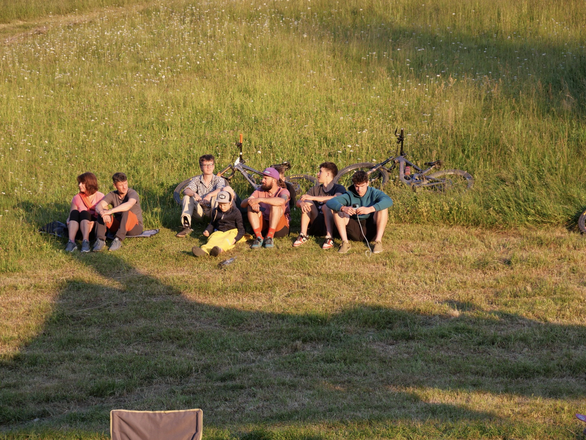


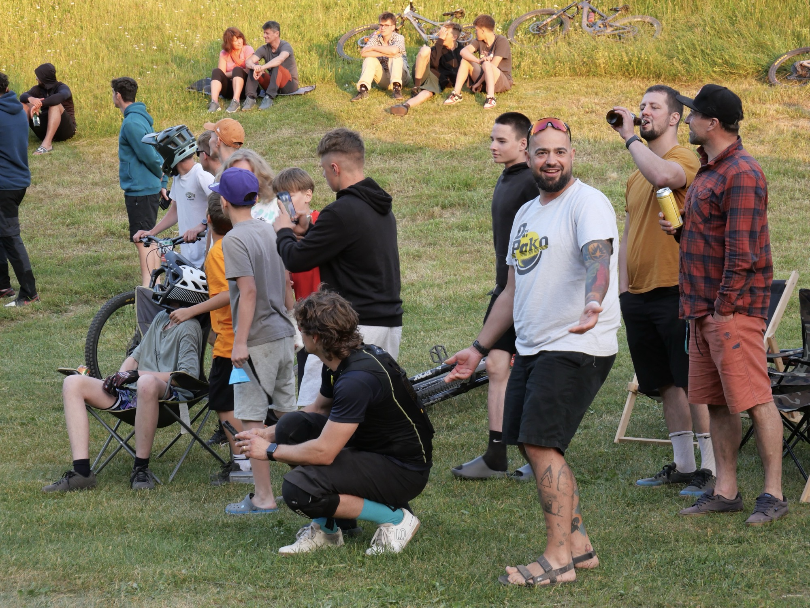


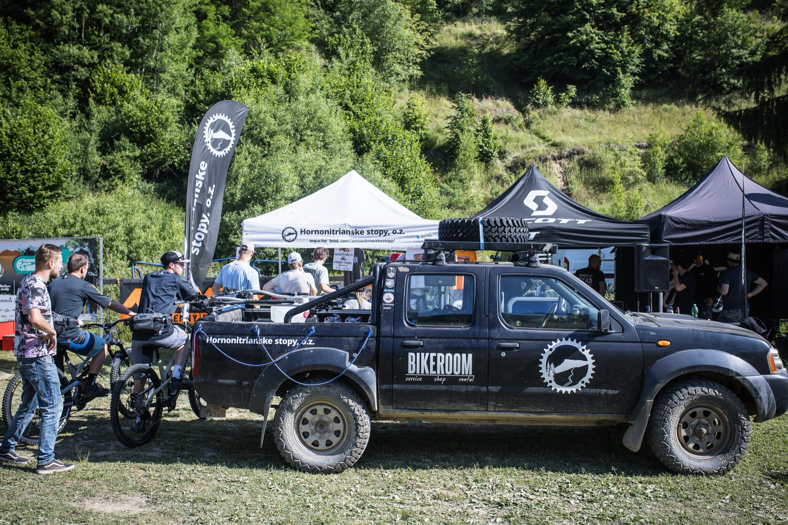
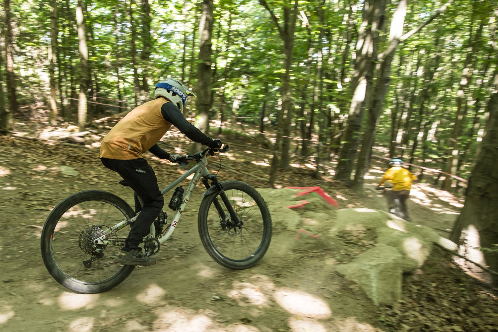
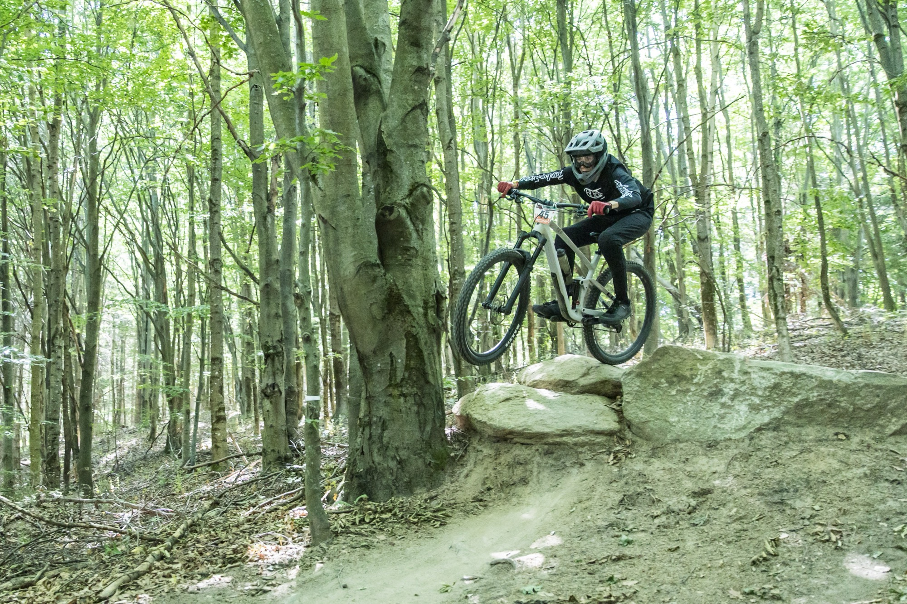
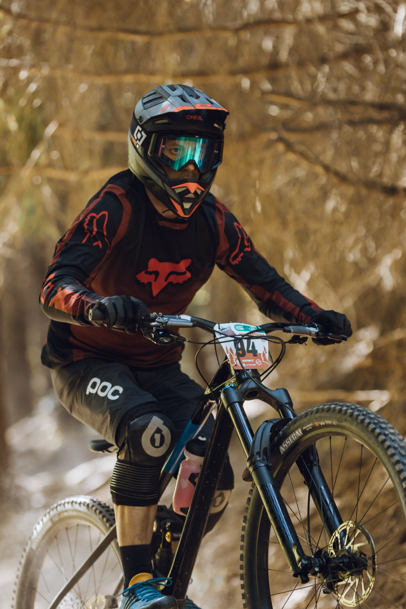

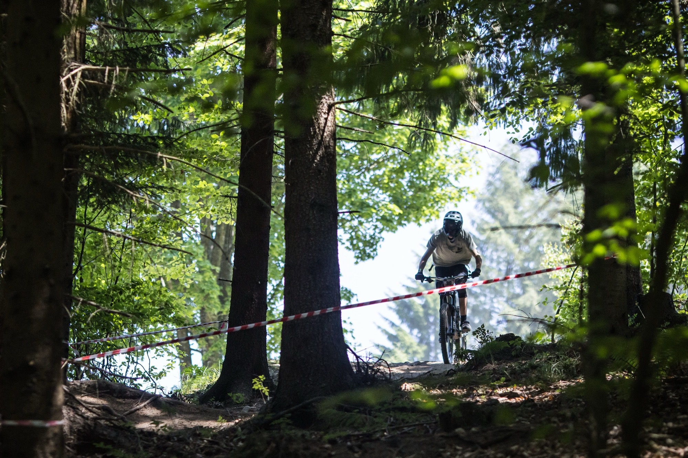
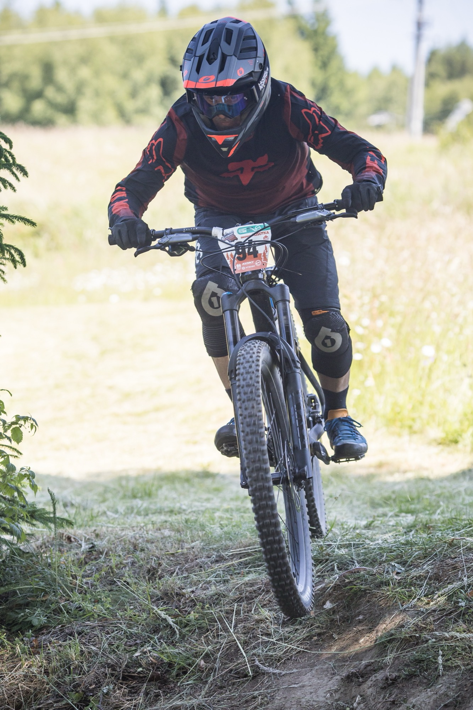
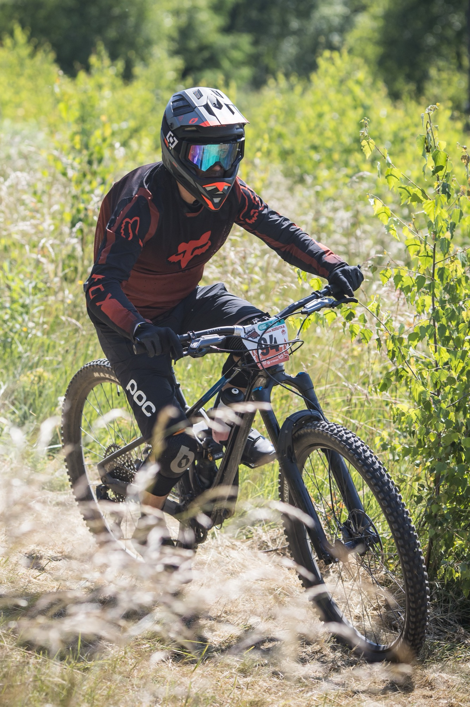

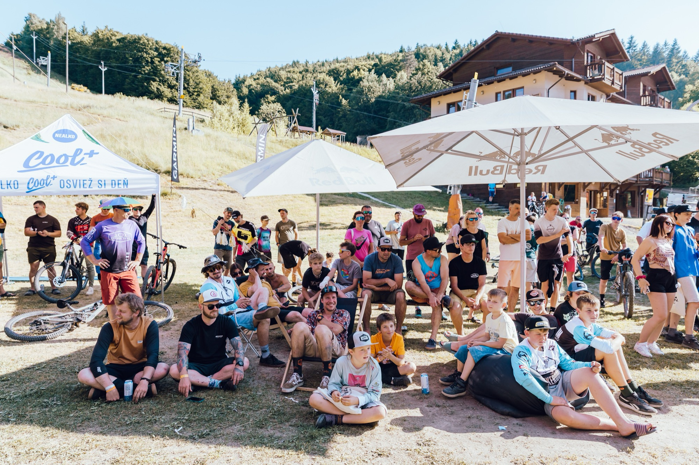
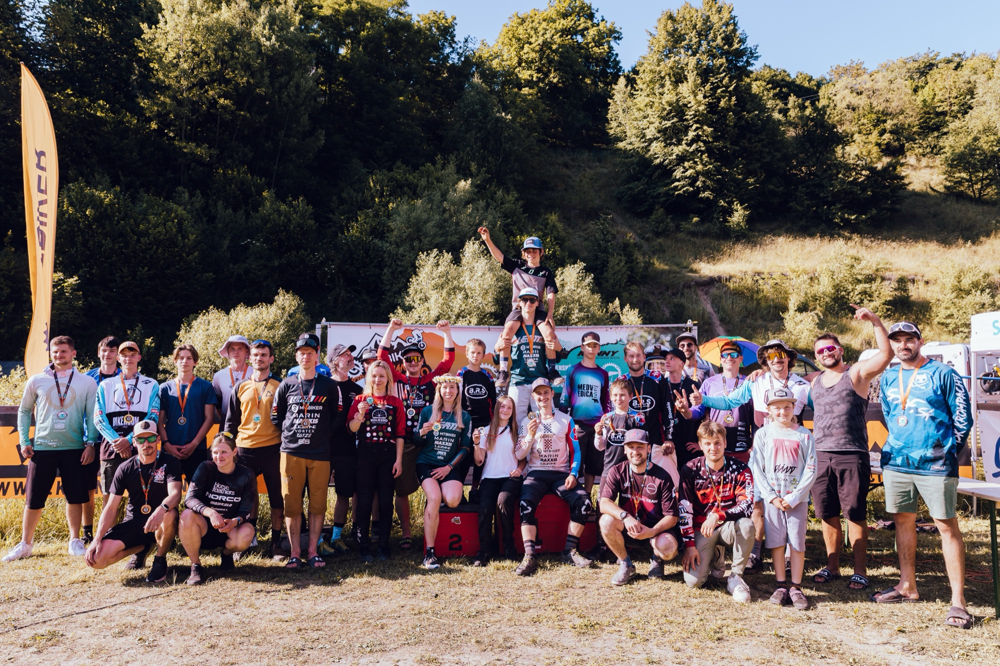

Hobby Challenge 40+
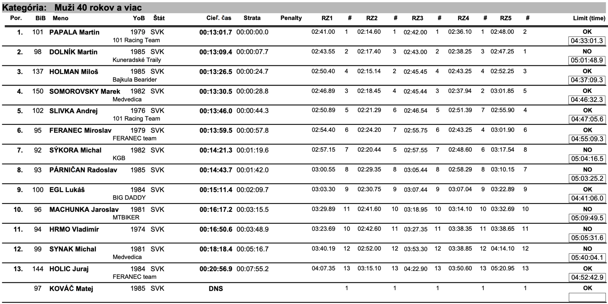